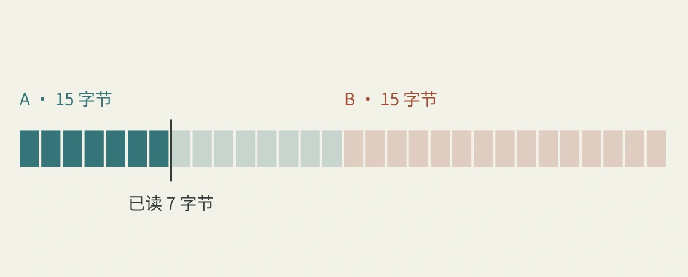

序言
一台设备通过网络连续上报两次读数。发送端明明调用了两次发送函数，接收端却可能只读一次，也可能读三次。要把这些字节还原成两条读数，需要理解 TCP 和应用程序分别负责什么。
字节有顺序，消息边界从哪里来
TCP 在两个端点之间建立连接，为应用提供有序的字节流。在一条正常工作的连接上，发送端先写入的字节会排在后写入的字节前面。丢失的网络分段可能经过重传，应用通常无需自行给收到的每段网络数据重排顺序。
字节之间没有“发送函数在这里返回”的标记。发送端写下 A、B 两条消息，接收端给出的缓冲空间大小、本地已有多少数据、线程什么时候运行，都会影响一次读取拿到多少字节。抓包软件里看见的 TCP 分段边界，也不等于程序的读取边界。
应用因此要约定怎样识别一条完整消息。这种约定称为成帧。所有消息结构完全相同时，可以约定固定长度。长度会变时，常见做法是先写长度再写内容，或者选择分隔符并规定内容里出现同一符号时如何转义。接收双方必须共享同一套规则。
给一条消息安排 15 个字节
假设要传递一条测量命令。从偏移 0 开始，第一个字节用 0xAA 标记开头，偏移 1 放命令类型，接着放三个各占四字节的读数，偏移 14 放末尾标记 0x55。总长度是 1＋1＋3×4＋1，共 15 字节。偏移 2 到 5 正好是第一个读数。
还要写明数值如何编码。例如约定使用 IEEE 754 单精度浮点数、大端序，1.0 的四个字节就是 3F 80 00 00。大端序指最高有效字节排在前面。直接把网络字节当作本机浮点变量的内存布局，可能在一类机器上碰巧可用，换到字节序不同的机器就读出怪数值。
固定长度让边界判断更简单。读到一帧已知的开头后，应去看固定偏移上的末尾标记。读数的四个字节里也可能恰好出现 0x55，如果只搜索第一个 0x55 就宣布一帧结束，解析位置便会落到字段内部。
在纸上走两次接收
设发送端依次写出两条完整命令。接收端第一次读到 7 字节，已经有开头和部分字段，却还缺 8 字节。把这 7 字节留在连接自己的缓冲区，业务回调此时应为零次。如果把它们当成一条短消息交付，后面的字节就再也对不到正确字段。
第二次又读到 23 字节，追加后共有 30 字节。先验证前 15 字节的边界，解析字段并交付第一条，移除已消费的前缀。余下仍有 15 字节，再做一遍，第二条也可以交付。若第二次只收到 22 字节，第一条仍应正常交付，留下的 14 字节等到下一次再读。
系统调用的返回值也有含义。在流式套接字上，请求读取非零长度时返回零通常意味着对端已正常关闭发送方向。此时缓冲区若还剩半帧，要把它记为截断的消息。新连接有自己的一段字节流，不能拿下一次重连的开头补到旧消息末尾。
连续发送 A、B 两帧，每帧 15 字节。竖线表示第一次读取的边界，其余字节由第二次读取。

第一次读到 7 字节，可以交付 0 帧，暂存 7 字节。
不接设备也能验证拆帧
准备两组容易区分的合法数据，例如把第一组的某个读数设为 1.0，第二组设为 2.0。把它们编码为同一份 30 字节样本，先整段交给解析器，再按 7＋23、14＋1＋15、逐字节三种方式输入。每次都应得到相同的两条命令，顺序、读数和回调次数全部一致。
再只送 14 个字节，结束输入，检查是否正确报告截断。排查故障时把收到的字节数、缓冲区余量、交付的帧数分开记录。连接一直有流量却没有完整命令，与命令数正确但浮点读数异常，是两条不同的检查路径。